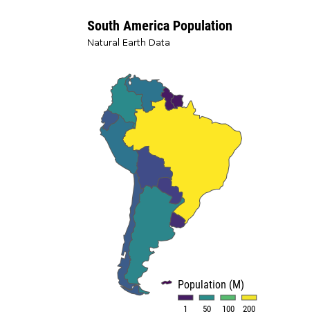

library(rnaturalearth)
library(hrbrthemes)
library(tidyverse)
library(gganimate)
library(cartogram)
library(sf)
# Get a sf object of worldwide from Natural Earth Data
worldmap <- ne_download(scale = 110,
type = "countries",
category = "cultural",
destdir = tempdir(),
load = TRUE,
returnclass = "sf")
# Filter by CONTINENT column to get South-America
# geometry
worldmap_pop <- worldmap %>%
filter(CONTINENT =='South America') %>%
select('POP_EST') %>% # country population
'colnames<-'(c('pop','geometry')) %>%
mutate(pop = as.numeric(pop)/1000000) %>%
as('Spatial') # sf to sp
# Create cartogram of country population.
cart_worldmap_pop <- cartogram_cont(worldmap_pop,'pop')
worldmap_pop$group = 0 # geometries of the simple map
cart_worldmap_pop$group = 1 # geometries of the cartogram.
# Bind both in a single sf object
anim_world <- rbind(worldmap_pop,
cart_worldmap_pop) %>%
st_as_sf()
# Build 100 maps (frames) using cubic spline and
# compile them in a unique file (*.gif).
p <- ggplot(st_as_sf(anim_world)) +
geom_sf(aes(fill = pop), alpha=1) +
coord_sf(crs = st_crs(anim_world), datum = NA) + #elimina x and y axis text.
scale_fill_viridis_c( # Compose a palette using
trans='sqrt',
name="Population (M)",
breaks=c(1,50,100, 200),
guide = guide_legend( keyheight = unit(3, units = "mm"),
keywidth=unit(8, units = "mm"),
label.position = "bottom",
title.position = 'top',
nrow=1)) +
labs(title = "South America Population",
subtitle = 'Natural Earth Data',
x=NULL,
y=NULL) +
theme_modern_rc(plot_title_size = 20,
axis = FALSE,
base_size = 16) + # my favorite theme!
theme(legend.position = c(0.8, 0.04),
axis.text = element_blank(),
panel.grid.minor = element_blank(),
panel.grid.major = element_blank()) +
transition_states(group,2,1) + # gganimate is just magical!
ease_aes('cubic-in-out')

A cartogram is is a thematic map, in which their geographic size is altered to be directly proportional to selected ratio-level variable. According to preserving shape and topology, cartograms are classified into contiguous (preserve topology, distort shape), non-contiguous (preserve shape, distort topology), and diagrammatic (distort both).
Rubber sheet (RSheet) is an iterative algorithm used to create contiguous cartograms. RSheet distorts the space
(See equation 1) to make the polygon areas and the target variable (e.g. temperature) have a linear relationship.
$$F_{ij} = (p_j - q_j) p_j/d_ij$$
Where:
Fij = force exerted by polygon j on point i.
pj = square root (actual area)/square root (π).
qj = square root (desired area)/square root (π).
dij = distance from centroid of j to point i
This dataset comprised of downscaled climate scenarios for the globe that are derived from the General Circulation Model (GCM) runs conducted under
the Coupled Model Intercomparison Project Phase 5 (CMIP5, see Taylor et al. 2012) and across
two of the four greenhouse gas emissions scenarios known as Representative Concentration
Pathways (RCPs, see Meinshausen et al. 2011).
The CMIP5 GCM runs were developed in support of the Fifth Assessment Report of the Intergovernmental Panel on Climate Change (IPCC AR5).
The NASA NEX-GDDP dataset was prepared by the Climate Analytics Group and NASA Ames Research
Center using the NASA Earth Exchange, and distributed by the NASA Center for Climate Simulation
(NCCS).
We create a cartogram to analyze the changes in annual mean temperature from 2006-2100 in all the countries around the world using the NASA NEX-GDDP dataset. Open here